Panduan lengkap penggunaan platform edukasi, refleksi SDQ, pendampingan, serta pengelolaan data SI Pental.
Disusun untuk pengguna umum, pengelola, dan administrator. Setiap panduan dilengkapi tangkapan layar dari aplikasi yang berjalan.
Dokumen ini menjelaskan seluruh pengalaman SI Pental dari dua sisi: bagaimana masyarakat menggunakan layanan, dan bagaimana administrator mengelola pertanyaan serta hasil asesmen.
Belajar psikologi, mengisi SDQ, membaca hasil refleksi, memakai chatbot, dan menghubungi konselor.
Memahami dashboard, mengelola bank pertanyaan, mencari data, melihat detail, dan mengekspor laporan.
Memahami struktur data, konfigurasi, deployment, keamanan dasar, serta penanganan masalah umum.
SI Pental adalah media edukasi dan refleksi awal. Hasil kuesioner maupun jawaban AI tidak menggantikan diagnosis psikolog, psikiater, konselor, atau dokter.
| Informasi dokumen | Keterangan |
|---|---|
| Judul | Manualbook & Dokumentasi SI Pental |
| Cakupan | Halaman publik, kuesioner SDQ, chatbot, konseling, dashboard admin, dan dokumentasi teknis |
| Versi aplikasi | Pembaruan antarmuka ungu–putih dan asesmen SDQ, Agustus 2026 |
| Kontak layanan | WhatsApp konselor · hari kerja pukul 09.00–16.00 WIB |
Pengguna umum dapat fokus pada halaman 4–15. Administrator disarankan melanjutkan ke halaman 16–22. Bagian teknis berada pada halaman 23–25.
SI Pental menyatukan konten kesehatan mental, asesmen awal berbasis SDQ, bantuan AI edukatif, akses konselor, dan pengelolaan hasil dalam sebuah website.
Dapat dibuka tanpa akun. Dirancang ramah, tidak menghakimi, dan mudah digunakan pada desktop maupun perangkat seluler.
Dilindungi autentikasi dan ditujukan untuk pengelola data serta bank pertanyaan.
Dibagi menjadi lima bagian.
Empat kesulitan dan satu prososial.
Jawaban edukatif dengan pagar keamanan.
Terhubung ke konselor pada jam layanan.
Data identitas digunakan untuk membantu membaca hasil secara lebih bermakna. Pengelola wajib membatasi akses dan tidak menyebarkan hasil asesmen tanpa dasar yang sah.
Ringkasan perjalanan pengguna dari membuka website hingga memperoleh dukungan.
Kenali fungsi platform dan pilih kebutuhan utama.
Jelajahi definisi, faktor, klasifikasi, mitos, dan rawat diri.
Isi identitas singkat dan jawab 25 butir SDQ dengan jujur.
Lima soal per bagian membuat pengisian terasa lebih ringan.
Pahami skor kesulitan, subskala, dan status refleksi.
Ajukan pertanyaan umum tentang perasaan dan kebiasaan sehat.
Gunakan WhatsApp bila membutuhkan ruang bercerita.
Pilih kebiasaan kecil yang realistis dan konsisten.
Ringkasan kegiatan pengelola dari login hingga pelaporan data.
Masuk memakai akun pengelola yang sah.
Baca statistik, tren, status, usia, gender, dan skor.
Tambah, edit, aktifkan, atau nonaktifkan butir SDQ.
Lihat tabel responden melalui pagination server.
Cari berdasarkan nama, status, tanggal, usia, atau gender.
Periksa profil subskala, komposisi, dan jawaban per butir.
Unduh data sesuai filter untuk pelaporan internal.
Gunakan informasi secara bertanggung jawab dan rahasia.
Beranda memperkenalkan SI Pental dan menyediakan jalur cepat menuju asesmen, edukasi, konseling, profil, dan area admin.
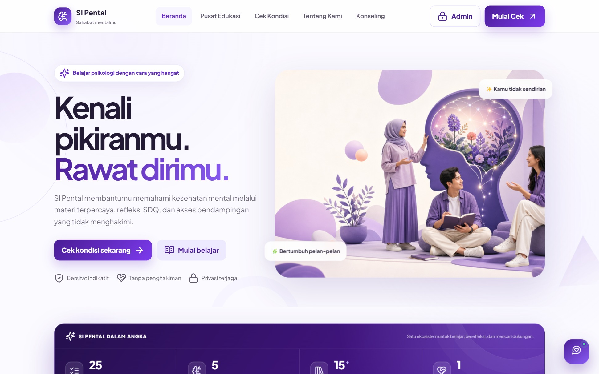
Membuka kuesioner refleksi.
Membuka pusat edukasi.
Ketika halaman digulir, menu atas tetap berada di layar sehingga pengguna tidak perlu kembali ke paling atas untuk berpindah halaman.
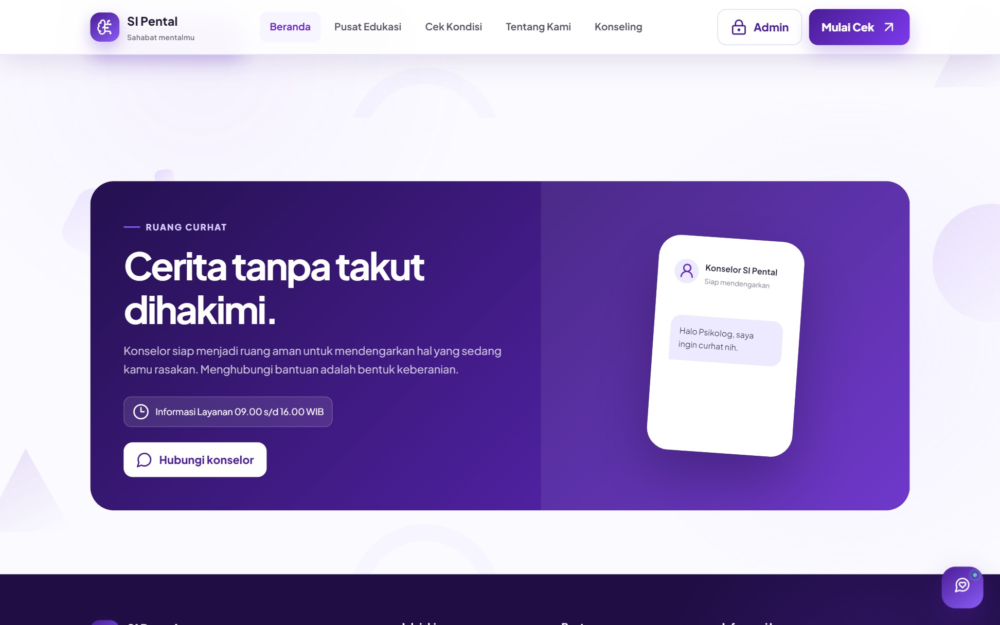
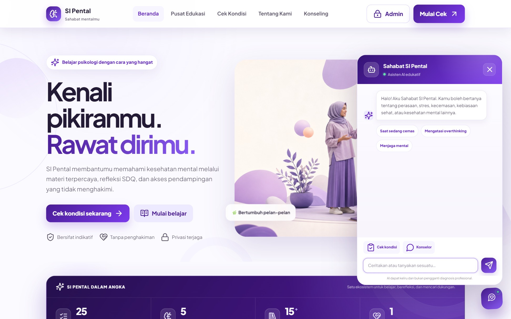
Tombol membuka WhatsApp ke nomor layanan dengan pesan awal yang telah disiapkan. Layanan dicantumkan pukul 09.00–16.00 WIB pada hari kerja.
Tekan tombol chat mengambang, pilih pertanyaan contoh atau ketik pertanyaan sendiri, lalu tekan ikon kirim.
Jangan hanya mengandalkan chatbot. Segera hubungi orang tepercaya, tenaga profesional, fasilitas kesehatan, atau layanan darurat setempat.
Pusat Edukasi tidak hanya menampilkan kartu. Konten disusun dalam peta pikiran, jalur cerita, tab faktor, slider, accordion mitos dan fakta, papan tanda, serta carousel rawat diri.
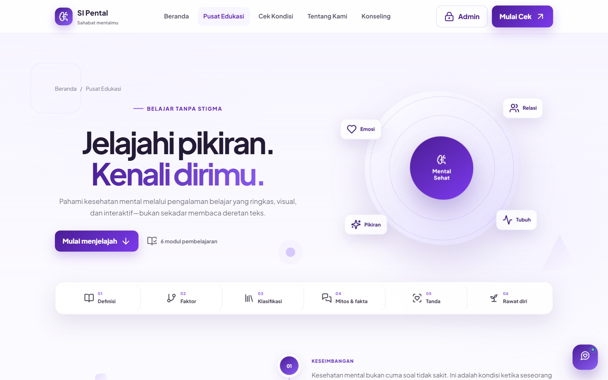
Pilih Definisi, Faktor, Klasifikasi, Mitos & Fakta, Tanda, atau Rawat Diri.
Tekan tab, buka accordion, dan geser carousel untuk melihat materi lain.
Materi dapat dipelajari per bagian tanpa harus selesai dalam satu waktu.
Mulailah dari topik yang paling dekat dengan pengalaman saat ini. Informasi digunakan untuk membangun pemahaman dan empati, bukan untuk memberi label pada diri sendiri atau orang lain.
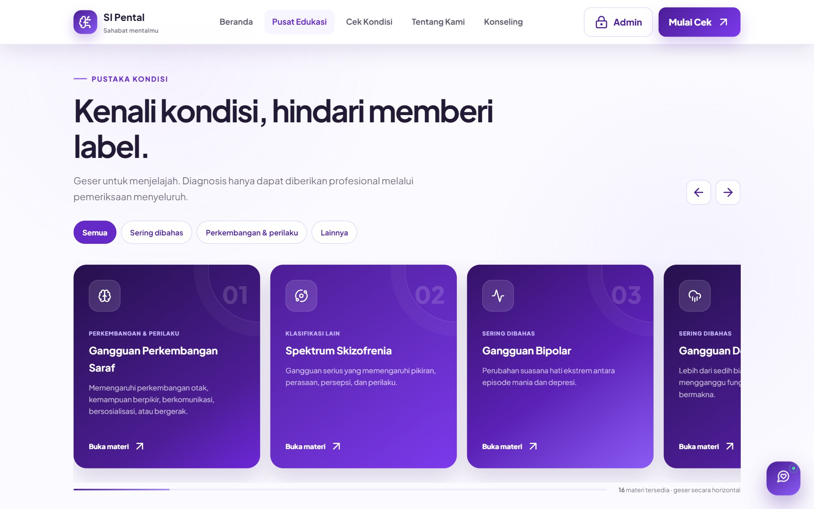
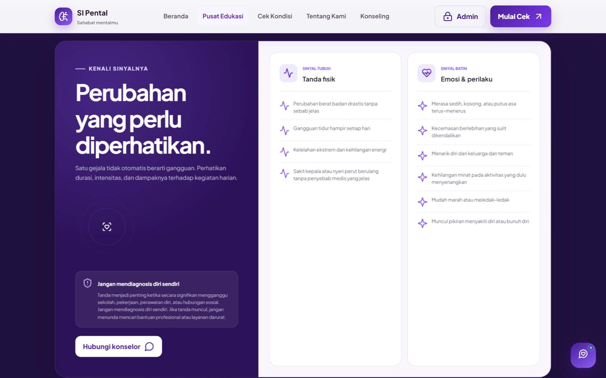
Perhatikan tiga hal sekaligus:
Satu gejala tunggal tidak otomatis menunjukkan gangguan mental.
Diagnosis hanya dapat ditetapkan oleh tenaga profesional melalui pemeriksaan menyeluruh. Hindari menyimpulkan kondisi seseorang hanya dari ringkasan materi.
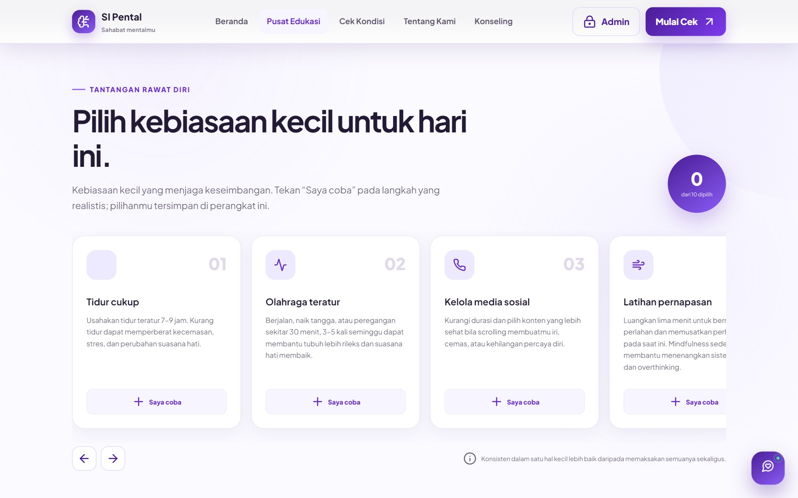
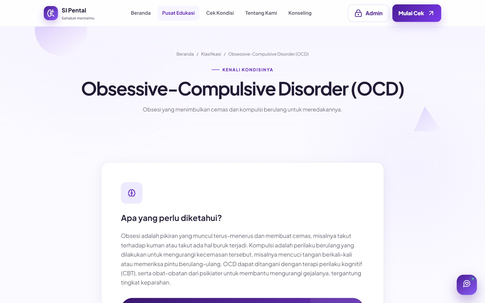
Gunakan panah kiri dan kanan untuk melihat kebiasaan. Tekan Saya coba pada tindakan yang ingin dilakukan. Pilihan tersimpan pada perangkat.
Berisi ringkasan kondisi, penjelasan utama, pengingat bahwa informasi bukan diagnosis, akses konselor, dan rekomendasi bacaan terkait.
Memilih satu kebiasaan yang dapat dilakukan secara rutin umumnya lebih membantu daripada memaksakan banyak perubahan sekaligus.
Halaman Tentang Kami menjelaskan alasan platform dibuat, nilai layanan, pendekatan yang digunakan, serta batas antara edukasi dan layanan klinis.
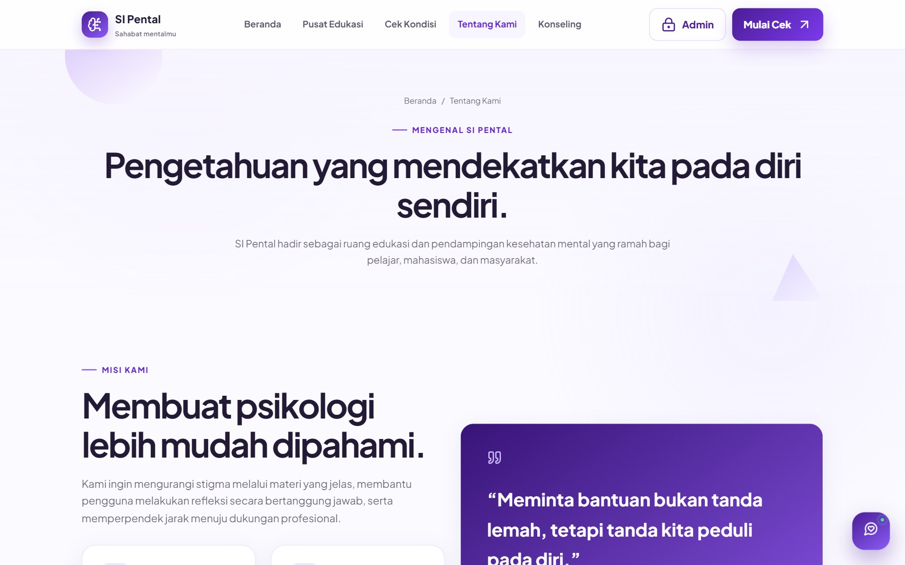
Bahasa yang manusiawi dan tidak menghakimi.
Membantu refleksi, bukan menetapkan diagnosis.
Menghubungkan edukasi, asesmen, dan dukungan.
Buka halaman ini ketika ingin menjelaskan SI Pental kepada pengguna baru, mitra, institusi, atau pihak yang membutuhkan gambaran ringkas tentang layanan.
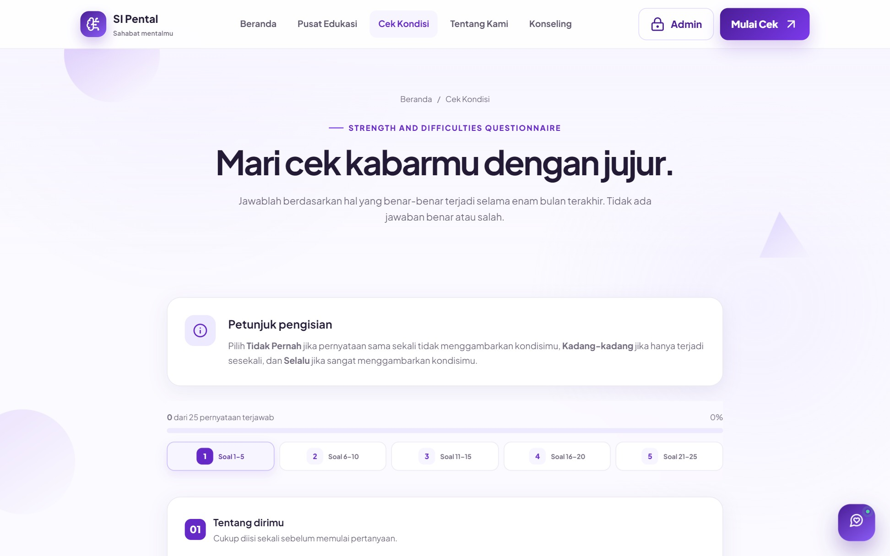
Pilih jawaban berdasarkan keadaan nyata selama enam bulan terakhir.
Tidak ada jawaban benar atau salah. Jangan memilih jawaban yang dianggap paling baik; pilih yang paling menggambarkan kondisi sebenarnya.
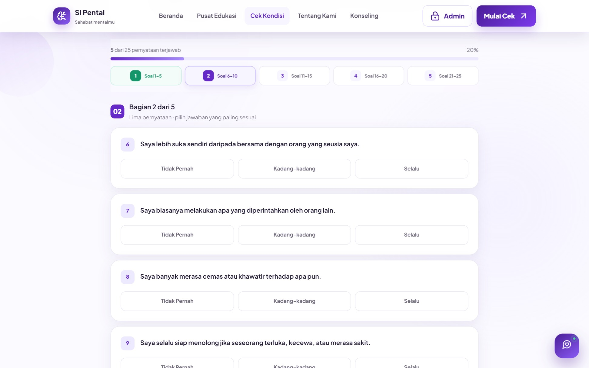
Semua soal pada bagian aktif wajib dijawab.
Sistem memeriksa jawaban yang belum diisi.
Progres tampil dalam angka dan persen.
Jawaban bernilai 0–2. Beberapa butir menggunakan reverse scoring. Skor kesulitan adalah jumlah empat subskala kesulitan dengan rentang 0–40; prososial dibaca terpisah dengan rentang 0–10.
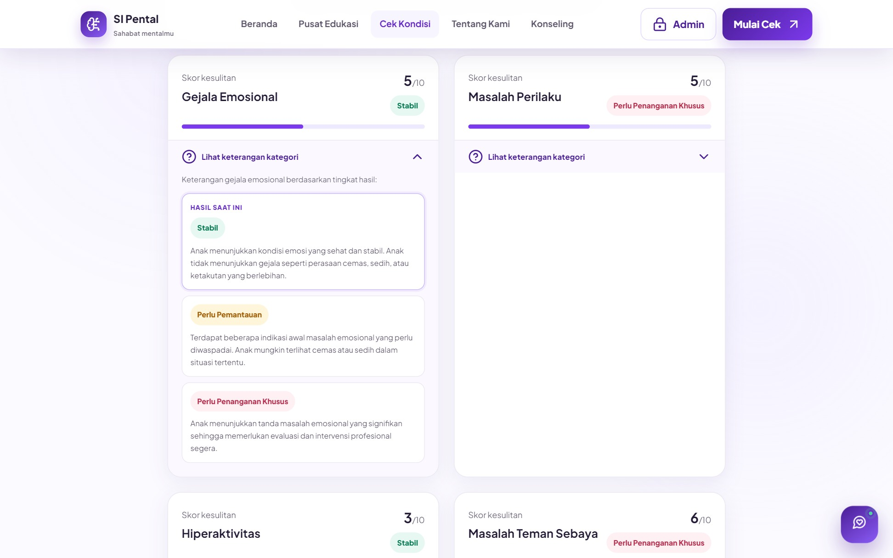
Pertahankan kebiasaan positif dan dukungan yang sudah dimiliki.
Perhatikan perubahan dan pertimbangkan konseling awal.
Disarankan berbicara dengan tenaga profesional.
Jangan melihat angka total saja. Perhatikan profil masing-masing subskala, kondisi sehari-hari, durasi keluhan, dan dampaknya terhadap sekolah, pekerjaan, relasi, tidur, serta perawatan diri.
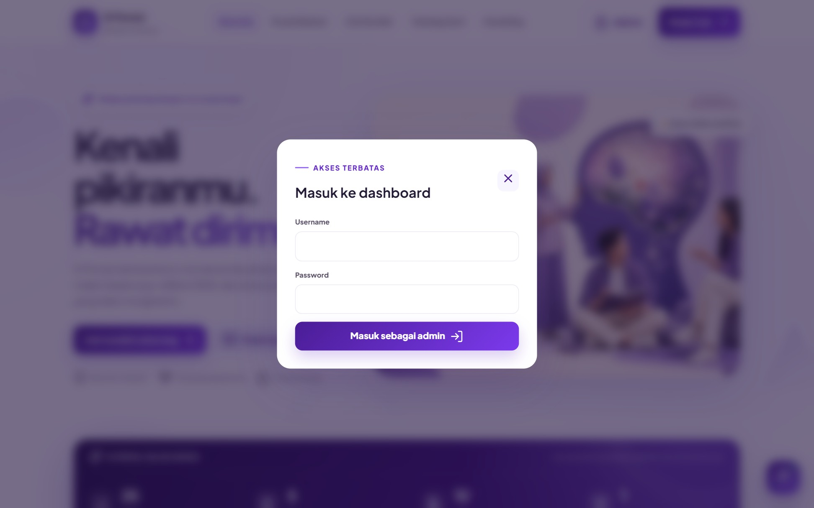
Tombol berada pada navbar.
Gunakan kredensial dari pengelola.
Sesi aman akan dibuat.
Percobaan login berulang dibatasi oleh sistem. Jika gagal, periksa huruf besar-kecil dan tunggu sebentar sebelum mencoba kembali.
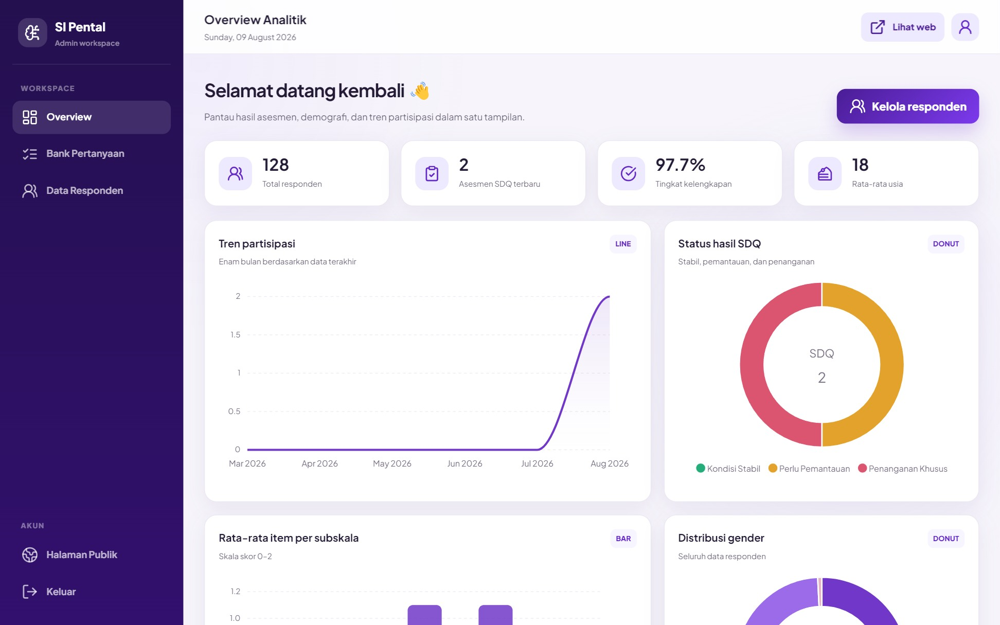
Nilai pada dashboard berubah otomatis ketika data responden bertambah atau dihapus. Data lama tetap dibedakan dari asesmen SDQ terbaru.
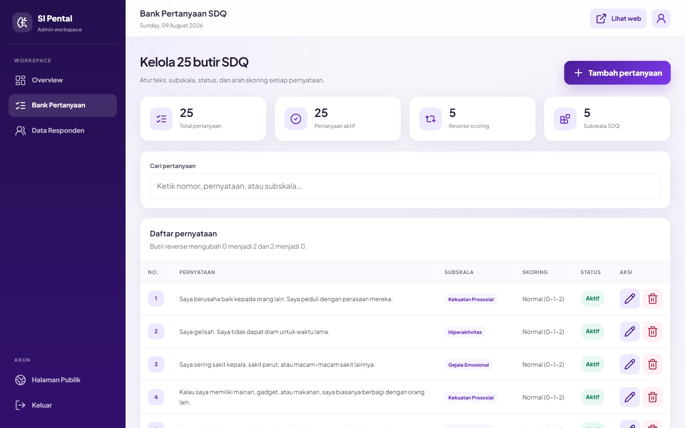
Setiap baris menampilkan nomor, teks pernyataan, subskala, pola skoring, status aktif, serta tombol edit dan hapus.
Gunakan kolom pencarian untuk menyaring berdasarkan nomor, kata dalam pernyataan, kategori, atau status.
Perubahan teks, kategori, urutan, atau reverse scoring dapat memengaruhi validitas dan hasil. Konsultasikan perubahan substantif dengan pihak yang memahami instrumen SDQ.
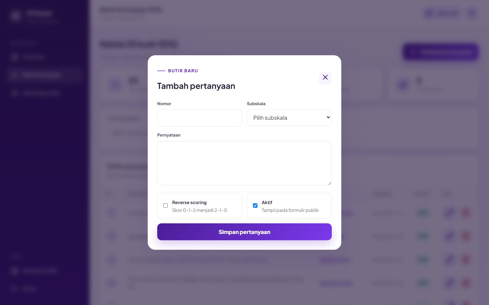
| Kolom | Fungsi |
|---|---|
| Nomor | Urutan unik pertanyaan. |
| Subskala | Dimensi tujuan skoring. |
| Pernyataan | Teks yang dibaca pengguna. |
| Reverse | Membalik skor 0–1–2 menjadi 2–1–0. |
| Aktif | Menentukan kemunculan di publik. |
Gunakan nonaktif untuk menyembunyikan butir sementara. Lakukan backup database sebelum penghapusan atau perubahan massal.
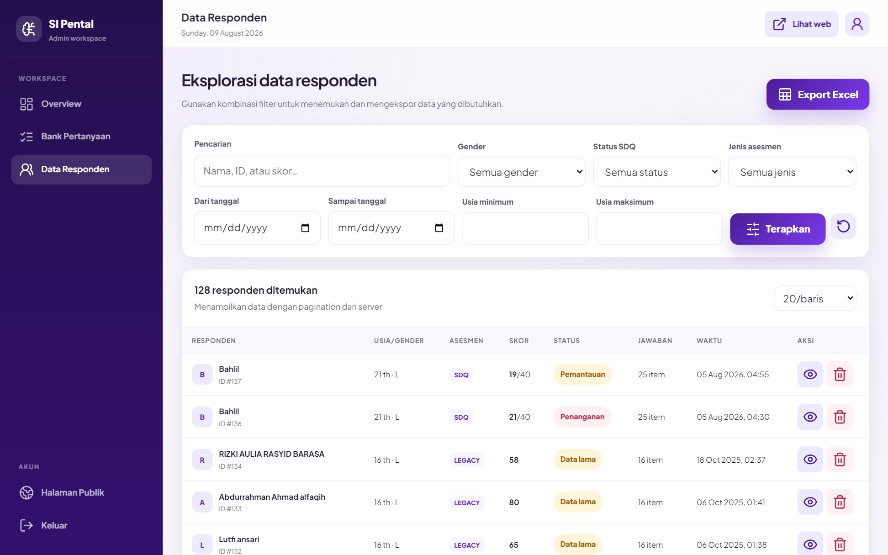
Pencarian mendukung nama, ID, atau skor.
Tekan Terapkan untuk menjalankan kombinasi filter.
Pilihan 10, 20, atau 50 baris menentukan jumlah data per halaman. Server hanya mengambil bagian yang diperlukan sehingga tabel tetap efisien saat data bertambah.
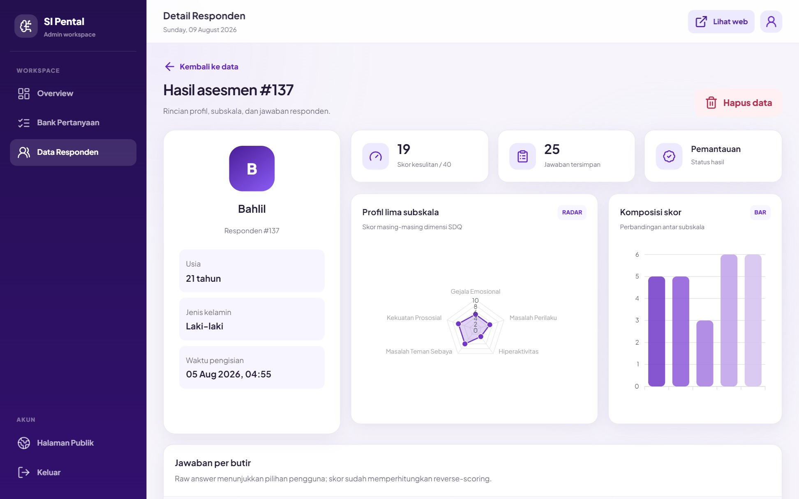
Nama, ID, usia, jenis kelamin, dan waktu pengisian.
Skor kesulitan, jumlah jawaban, dan status hasil.
Radar lima subskala, komposisi skor, dan jawaban tiap butir.
Halaman ini memuat informasi individual. Hindari mengambil screenshot atau membagikan hasil melalui saluran yang tidak aman kecuali telah memiliki tujuan dan kewenangan yang jelas.
Profil singkat, 25 jawaban mentah, skor terhitung, subskala, dan status disimpan dalam satu transaksi database.
Sistem menyusun statistik total, demografi, tren bulanan, status, rentang skor, serta rata-rata subskala.
Filter pencarian, demografi, status, jenis asesmen, rentang tanggal, dan usia dapat digabungkan.
File .xls berisi data sesuai filter aktif, termasuk lima subskala dan waktu pengisian.
Jika admin memfilter gender, status, tanggal, atau usia, file unduhan hanya berisi data yang memenuhi filter tersebut. Gunakan Reset untuk kembali ke seluruh data.
Tombol hapus pada detail atau tabel menghapus responden beserta semua jawabannya melalui relasi cascade. Tindakan ini tidak dapat dipulihkan tanpa backup.
| Tabel | Fungsi | Catatan |
|---|---|---|
questions | Master 25 butir SDQ. | Nomor unik; kategori dan reverse scoring memengaruhi hasil. |
responses | Profil dan ringkasan satu asesmen. | Menyimpan tipe legacy/SDQ serta skor subskala berbentuk JSON. |
response_answers | Jawaban per butir. | Terhubung ke respons dan terhapus otomatis saat induknya dihapus. |
users | Akun pengguna sistem. | Username unik dan password disimpan dalam bentuk hash. |
sessions | Sesi login dan kunjungan aplikasi. | Dapat dibersihkan tanpa menghapus hasil asesmen. |
cache / cache_locks | Cache aplikasi. | Bukan data utama; dapat dibangun ulang. |
migrations | Riwayat versi struktur database. | Menentukan migrasi yang sudah dijalankan. |
Kolom assessment_type membedakan data kuesioner lama dari SDQ terbaru sehingga statistik dan detail dapat ditampilkan secara tepat.
Jalur pada public_html/index.php harus menuju ../laravel/vendor, ../laravel/bootstrap, dan ../laravel/storage.
| Target | Mode |
|---|---|
| Folder umum | 0755 |
| File umum | 0644 |
.env | 0600/0640 |
| storage & cache | 0775 |
File tersebut dapat berisi password database dan API key. Jika sebuah key pernah terlihat pada screenshot atau pesan publik, segera cabut dan buat key baru.
| Gejala | Kemungkinan penyebab | Tindakan |
|---|---|---|
| HTTP Error 500 | Path vendor/autoload.php salah, cache lama, permission, atau konfigurasi. | Baca error_log dan storage/logs/laravel.log; perbaiki error pertama yang muncul. |
| Halaman kosong | $app->handleRequest(...) hilang dari index.php. | Pastikan front controller lengkap. |
| Database connection error | Nama DB, username, password, host, atau privilege keliru. | Cocokkan kredensial cPanel pada .env. |
| CSS/gambar tidak muncul | Aset tidak berada di document root atau cache browser. | Pastikan folder assets ada di public_html, lalu lakukan hard refresh. |
| Chatbot belum dikonfigurasi | API key/model belum terbaca oleh Laravel. | Periksa variabel server, lalu jalankan optimize:clear. |
| Chatbot koneksi bermasalah | Provider menolak request, kuota, SSL, atau jaringan server. | Periksa log Laravel tanpa menampilkan API key. |
| Grafik admin kosong | Belum ada SDQ baru atau library grafik gagal dimuat. | Periksa data dan console browser/jaringan CDN. |
| Impor SQL gagal duplikat | Dump dimasukkan ke tabel yang sudah berisi data. | Backup lalu gunakan database kosong atau lakukan merge terkontrol. |
Catat waktu kejadian → buka log terbaru → baca baris error pertama → cocokkan path/file/konfigurasi → perbaiki satu penyebab → bersihkan cache → uji kembali.
Screenshot error boleh disimpan untuk diagnosis, tetapi sensor API key, password, cookie, token, dan informasi pribadi responden sebelum dibagikan.
Pelajari materi tanpa memberi label, isi asesmen dengan jujur, baca hasil sebagai arah refleksi, dan cari dukungan ketika dibutuhkan.
Belajar · Refleksi · Dukungan
Pantau · Kelola · Ekspor
09.00–16.00 WIB
Informasi di SI Pental tidak menggantikan diagnosis atau penanganan profesional. Dalam keadaan krisis atau darurat, segera cari pertolongan langsung.
Manualbook & Dokumentasi SI Pental · Versi 1.0 · 2026